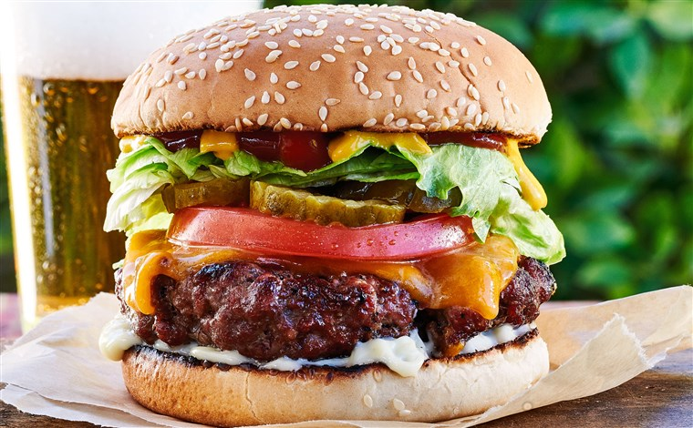

HAMBURGER OF THE WEEK
Time
Level: Easy
Prep: 10 min
Yield: 4 Hamburgers
Total: 25 min
Cook: 15 min
BENGAL BURGER
26 Reviews
"No more dry, lackluster burgers. These are juicy, and spices can be easily added or changed to suit anyone's taste. Baste frequently with your favorite barbeque sauce. If you find the meat mixture too mushy, just add more bread crumbs until it forms patties that hold their shape."
Ingredients
- 24 ounces ground chuck
- 1 teaspoon kosher salt
- Freshly ground black pepper
- Spice Mix, optional, recipe follows
- 1 tablespoon vegetable oil
- 4 slices cheese, such as Cheddar, American cheese
- 4 soft hamburger-style buns, split
- 4 slices beefsteak tomatoes, optional
- Assorted lettuces and greens, such as iceberg
- Assorted mustards, optional
- Mayonnaise, optional
- Ketchup, optional
Spice Mix
- 1 tablespoon Worcestershire sauce
- 2 teaspoons garlic powder
- 2 teaspoons onion powder
- Hot Sauce, to taste
Directions
- Preheat the oven to 450 degress F. Place a roasting rack on a foil-lined baking sheet in the oven.
- Using your hands, break the meat into small pieces and combine evenly but loosely on a parchment or waxed paper-lined baking sheet. Spread the meat out and season it generously with salt and pepper. If desired, add the spice mix at this time.
- Divide the meat into 4 portions (about 6 ounces each). Using your hands, form each portion into a ball-shape by gently tossing it from 1 hand to the other. (Don't over work or press too firmly on the meat.) Gently form each portion into a patty about 3 1/2 inches wide and 1-inch-thick.
- Preheat a large cast iron skillet over medium-low heat for 5 minutes. Raise the heat to high and add the oil. Add the patties and cook, turning once, until well-browned, about 2 minutes each side.
- Using a spatula, transfer the hamburgers to the roasting rack in the oven and continue cooking to desired doneness, 8 to 9 minutes for medium-rare, 10 to 11 minutes for medium, and 13 to 15 minutes for well-done. If you are using the cheese, top the hamburgers during their last couple of minutes of cooking to melt.
- Transfer the hamburgers to a plate, let rest for a couple minutes before serving. Meanwhile, toast the hamburger buns. Assemble the hamburgers with the condiments and toppings or your choice. Serve.
- When cooking on a countertop grill, turn on grill, then place burgers on the heated grill.
-
Timing for a countertop-grill:
For Medium-Rare: Cook for 3 minutes covered and then unplug the machine and continue to cook covered for 2 to 3 more minutes. - For Medium: Cook for 4 minutes covered and then unplug the machine and continue to cook covered for 4 more minutes.
- For Well: Cook for 5 minutes covered and then unplug the machine